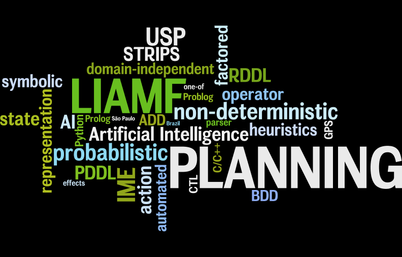

LIAMF's Planning Group
This is the main page of the Planning, Cognitive Robotics and Applications Research Group.
We are part of LIAMF (Logics, Artificial Intelligence and Formal Methods Laboratory) at IME (Institute of Mathematics and Statistics), part of USP (University of Sao Paulo).
We are located atComputer Science Department
Institute of Mathematics and Statistics
University of Sao Paulo
Rua do Matão 1010 - Bloco C - Sala 206
São Paulo, SP, Brazil - 05508-900
Research
Our research interests are mainly (but not exclusively) related to:
- AI Planning
- Planning and Scheduling
- Planning in Cognitive Robotics
- Abductive Event Calculus Planning
- Library of Problem Solving Methods
People
Head of group
- Leliane Nunes de Barros, Associate Professor, Ph.D. (University of São Paulo, 1998)
Ph.D. students
- Ignasi Andrés Franch
- Thiago Pereira Bueno
MSc. students
- Milton Raúl Condori Fernández
- Thiago Dias Simão
- Viviane Bonadia dos Santos
Alumni
- [TO DO]
Projects
[TO DO]
Software
The source code of all our lab's software are available at a public repository.
- ppddl-pp: domain and problem PDDL parser in C/C++ using Flex & Bison.
- [TO DO]
Publications
[TO DO]